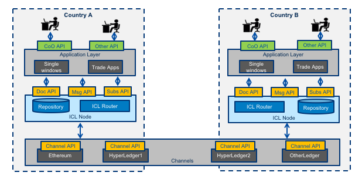

- Spec ID:
icl/1

- Editor:
- Contributors:
Licence
All material published on edi3.org including all parts of this specification are the intellectual property of the UN as per the UN/CEFACT IPR Policy.
This Specification is free software; you can redistribute it and/or modify it under the terms of the GNU General Public License as published by the Free Software Foundation; either version 3 of the License, or (at your option) any later version. See http://www.gnu.org/licenses.
Change Process
This document is governed by the 2/COSS (COSS).
Language
The key words “MUST”, “MUST NOT”, “REQUIRED”, “SHALL”, “SHALL NOT”, “SHOULD”, “SHOULD NOT”, “RECOMMENDED”, “MAY”, and “OPTIONAL” in this document are to be interpreted as described in RFC 2119.
Abstract
This document describes a technical specification for the trusted transfer of cross-border regulatory documents between government agencies using distributed ledger technology. The use of a distributed ledger approach for G2G document sharing offers several advantages over alternative methods.
- There is no centralised infrastructure - thereby avoiding the need for complex funding models and avoiding a single point of failure or security risk.
- Each country can host trade documents within their jurisdiction, conforming to increasingly strict data soveriegnty rules.
- Trade documents can be notarised and verified with very high integrity against tampering or forgery.
- Where appropriate (eg single use certificates), documents as digital assets can be transfered and acquitted follwing the physical asset movement.
There is no expectation that a single uber-ledger supports all G2G transactions. A apecific ledger may service as few as two countries and may be limited to a single process (eg certificates of origin and certificates of non-manipulation) or may service multiple coujntries and multiple processes. Therefore this specification supports the use of multiple different distributed ledgers (both public and private) by defining a standrdised protocol that allows users within a jurisdiction to interact with multiple ledgers via a simple interface.
This document uses Certificates of Origin and Certificates of Non-Manipulation as the guiding use case for the initial specification, however it is intended that the Inter Customs Ledger should be generic and allow for the transfer of any shipment related documentation between authorised agencies.
Glossary
To-do : replace this section with a simple link to role definitions in the dictionary specification
| Term | Description |
|---|---|
| 3PL | Third Party Logistics Provider (eg freight forwarders) |
| Agent | Intermediaries such as customs agents |
| API | Application Programming Interface |
| Carrier | A provider of transport means/equiment such a shipping line or airline |
| Certifying Body | An organisation that has been accredited to issue one or more certificate types - such as a chamber of commerce or government agency that may issue Certificates of Origin |
| DLT | Distributed Ledger Technology, of which Blockchain is the most common example. |
| Document | When capitalised in this document, this term refers to any document which gives authorisation for an importer or exporter to take some action (or be granted some further authority) with respect to an international shipment of goods. e.g. a Certificate of Origin, a Phytosanitary Certificate, an Export Declaration, etc |
| Exporter | Business or individual that is the seller of internationally traded goods |
| ICL Node | A device on an ICL network which has full visibility of the entire ledger and contriibutes to the integrity of the ledger by implementing a Consensus Algorithm. Typically operated by a national regulator |
| ICL User | any of the above roles that interact with the ICL (typically via some software application) |
| Importer | Business or individual that is the buyer of internationally traded goods |
| Regulator | A government agnecy such as a customs authority |
Other Projects
There have been a number of recent projects which use blockchain to implement a system which allows the validation of Certifiate of Origin issued under some Free Trade Agreement. Singapore and Kenya have both worked with industry parter vCargo Cloud to implement blockchain Certificate of Origin solutions. The first Certificate of Origin for a shipment from the UK was issued by {who?} in {month?} 2018 and in {when?} the United States were looking into the use of blockchain to validate Certificates of Origin for shipments made under {old agreements?}. These projects have highlighted the necessity for digital, blockchain based solutions to exist alongside paper based processes in the short term, requiring the continued existance of some mechanism for validating the authenticity of a paper certificate.
Before the prevalence of distributed ledger technology, the common approach to providing for assurance as to the validity of a Document was largely achieved with the idea of a hub. There are a number of implementations of this approach which may be instructive: ICC Certificate of Origin verification website, EPIX, IPCC ePhyto hub, etc. However, solutions based on global hubs typically face difficulties finding a funding model and are often honey-pots of information for security attacks. Consequently, national regulators are increasingly reluctant to depend on centralised solutions.
The link below provides a number of resources which attempt to give an overview of the landscape of blockchain based projects related to both Certificates of Origin and International trade in general
Survey of Blockchain Based Approaches to Managing International Trade Documentation
ICL Requirements
Business Context
International trade clearance procedures require a number of documents to be presented to satisfy the requirements of a variety of agreements. For example, in order for an importer to gain preferential tariff treatment under a Free Trade Agreement, the importer must present a valid Certificate of Origin (issued to the exporter) which states that the goods being imported qualify as originating in the country which is party to the agreement. These processes are managed largely by the transfer of paper documents which are subject to loss, alteration and forgery.

In many jurisdictions, significant digitisation progress has been made for interactions between the national regulators (eg customs) and the local regulated community (eg importers, exporters, etc). In Australia for example, 99% of customs documents are already lodged electronically. However there still remains a very significant amout of paper documents that support cross border trade. The majority of the paper documents fit the same pattern; they are issued by a party in the exporting country but required by the regulator of the importing country for goods clearance. One significant reason that paper has been difficult to replace is that there is no direct trust relationshiop that allows in importing regulator to confirm the identity of the document issuer in the exporting jurisdiction.
An Inter Customs Ledger (ICL) is proposed as an apporach to the transfer of shipment related documents between customs agencies which is immediate, permanent and irrefutable. The intercustoms ledger is essentially a trust bridge between national identity schemes - basically the importing regulator trusts the identity of the document issuer because the exporting regulator confirms the issuer identity.

The future state diagram shows the relationship between the ICL and three other key components.
- National single windows and port community systems provide a streamlined and automated means for local entities (traders, 3PL, agents, etc) to interact with their local regulators. Many nations now have some kind of single window system but implementations are varied and usually unique to the local regualatory environment. The ICL can be thought of as a cross-border integration framerwork between national single windows. However, it is important that the varied and complex national rules do not bleed into the ICL so that integration remains simple.
- National digital identity schemes are emerging in many jursdictions are provide a way for businesses and individuals in a country to prove their identity to any government agency and to any authorised non-government entity. Business identity schemes are typically linked to public tax registration numbers. Individual identities may be linked to a business identity and will normally include the idea of identity assurance levels which indicate the degree of identity integrity attached to the token holder. This means, for example, that a certificate of origin provided by an exporter to their local customs authority (possibly via a single window) can be passed to the importing authority together with a high integrity identity claim. In this way, the ICL is essentially an international “trust bridge” between national identity schemes.
- Commercial trade data platforms/pipelines are an emerging capability that seek to provide their customers with and-to-end supply chain visibility and management. They are essentially multi-source data aggregators and their scope usually includes some or all of trade, transport, financial, and regulatory data. The data managed by commerciasl pipleines is not only traditional trade documents (invoices, bills of lading etc) but also IoT streams like data feeds from instrumented smart containers. These platforms can provide significant value to their stakeholders and have a scope much larger than G2G data sharing. The ICL complements these commercial services and does not compete with them.
Architectural Principles
| ID | Principle | Rationale |
|---|---|---|
| P1 | Avoid bleeding any local regulatory complexities into cross-border processes | A strong separation between local complexity and cross border document exchange is essential for scalability. The ICL specification must be as simple as possible in order for updake to scale. |
| P2 | Support multiple distributed ledger types & networks | A single global uber-ledger would need to pick a technology winner, would restrict the ability to intruduce non breaking extensions, would present a high value attack target, and is unlilkely to be supported by every nation. |
| P3 | Coexist nicely with paper processes | A switch from paper processes to native digital documents exchanged via ICL will not happen overnight. Therefore the ICL shoiuld add value to existing paper processes and should facilitate a simple and gradual transitoin from paper to native digital documents. |
| P4 | Leverage the unique position of national regulators | Customs authorities enjoy a unique postion as the single convergence point for all imports to and exports from a country. That allows an intercustomes ledger to easily achieve complete coverage of bilateral or multilateral trading relationships. |
| P5 | Complement rather than compete with commercial platforms | Regulators are not natural innovators. The ideal ICL will provide a non-comptetitive platform that leverages the position to regualators to the benefit of their constituents whilst allowing comemrcial innovation to flourish. |
| P6 | Do not require businesses to provide more than their local regulatory obligations demand. | There may be genuine value to business in using the ICL for cross border processes beyond the regulatory minimum but regulators cannot and should not demand it. Therefore, ICL implementations should define a clear value propisition for every document that exceeds the regulatory minimum. |
| P7 | Assume on-chain data is public | The ICL may be implemented on either public ledgers such as etherium or private ledgers such as hyperledger. In either case, it should be assumed that on-chain data is public since even a private ledger has multiple nodes, each of which has a has a full copy and the privacy of on-chain data cannot be guaranteed. |
High Level Requirements
| ID | Requirement | Solution Links |
|---|---|---|
| R1 | The on-chain ICL data model MUST be simple enough to support any cross border use case. | Link to ICL on-chain data model |
| R2 | The on-chain ICL data SHOULD not contain sensitive or private information | link to threat-risk analysis |
| R3 | A message on the ICL SHOULD provide a mechanism for discovering the full content of the document to which it relates | Link to discovery protocol |
| R4 | Trade documents referenced by the ICL SHOULD be accessible via a consistent API | Link to Repository API |
| R5 | The ICL SHOULD NOT require that the user have any knowledge of the specific leger technology used (ehterium, hyperledger, etc) | link to Message API |
| R6 | The ICL SHOULD NOT assume that the user knows which ledger and which protocol to use in order to exchange a specific document type between two countries. | Link to Routing API |
| R7 | Any Regulator SHOULD be able to participate in the ICL by hosting an ICL Message API that integrates with one or more ledgers | link to participation rules |
| R8 | Participating in the network by hosting a Message API SHOULD NOT automatically grant access to the content of a document | link to access control rules |
| R9 | The ICL MUST provide a mechanism for preventing an importer or exporter from re-using a document which is intended to have a single use | Link to smart contract patterns |
| R10 | The ICL MUST provide some mechanism for asserting the validity of a document presented by an importer or exporter | Link to notary / verification API |
| R11 | The ICL MUST provide some mechanism for invalidating a Document | Link to message API |
| R12 | The ICL MUST provide some mechanism for specifying who can perform certain actions with respect to a Document | Link to access control rules |
| R13 | The ICL SHOULD allow any blockchgain technology to be used | link to technology plug in architecture |
| R14 | The ICL MUST allow transactions to be written individually or in bulk | link to wire protocol / side tree architecture |
| R15 | The ICL MUST provide a consistent means to support any G2G business process | link to semantic layer architecture |
ICL Technical Specification
Architecture Overview
The ICL Specification comprises 5 standard APIs as shown (in yellow) in the conceptual architecture diagram below. The APIs are organised into three layers
- The Channels layer represents the collection of compliant DLT solutions that can be used for cross-border document exchange. As an increasing number of DLT vendors support the channel API specification, so there will be an increasing number of channel options for ICL nodes.
- The ICL node layer represents the compomnents deployed by any country that wishes to participate in the inter-customs ledger. It provides an abstraction above specific DLT channels but remains agnoistic of specific cross-border business processes such as origin data exchange. This layer provides one or more secure document repositories (Document API) and implements the routing logic for recording channel transactions (Message API) and listening for relevant channel events (Subscriptions API).
- The applications layer represents any platform that will make use of the ICL for cross border exchange. THis is the business process specific layer and will typically be represented by single window applications or other trade & logistics applications. The diagramn shows a CoO (Certifcate of Origin) API as an example but this lay coiuld support any trade document (invoice, Vill of Lading, etc).

ICL node implementations need access to routing information such as “to send document type X from Country A to Country B, use DLT channel 2”. Initially it is expected that this information is managed independently in each node. However as the number of countries, channels, and document types increases, there may be a requirement to manage routing information in a consistent way (which could be a centralised service or could be itself a decentralised ledger). Also, as countries make new arrangements (eg ceprecate one DLT channel in lieu of another) there will be a need to orchestrate the change without incurring downtime.
Information and Security Architecture
To-Do : Add some words about this diagram

Generic Process Flow
To-Do: Insert a sequence diagram here. But the flow is something like:
Preconditions
- Two or more countries (via one or more national or state regulators) have agreed on a specific ICL channel for one or more document types.
- Each authroised party (ie regulator) has also made available the repository URLs for each document type that they will host.
- public keys of authorised operators have been exchanged and mapped to persistent identities
- One or more business applications (eg trade single windows) in each country have integrated with theire respective national ICL nodes for the purposes of trusted cross-border exchange of documents.
Cross-Border Sequence
The process starts when participant in the sender country uses a local business application (eg single window) to create a business document (eg a Certificate of Origin).
- Sender country authority POSTS a document to the /documents API, which stores the document and returns a unique multi-hash ID.
- Sender country POSTS a message to the /messages Tx API from (sender) to (receiver) as a subject-predicate-object triple where each component of the triple conforms with a well defined vocabulary (ie the UN/CEFACT semantic library). The object is the multi-hash of the document to be sent.
- ICL node POSTS the message to the correct distributed ledger channel via the channel API and, if the DLT channel successfully adda a new block to the chain, then a success response is returned to the ICL node.
- The ICL node updates the document api with access control information POST /documents/{id}/acl where acl is a list of recipients of the DLT message. Essentially the access control rule is “if we successfully sent you a message then you are allowed to access the corresponding document”.
- The receiving country is notified of a new message via the Message Rx API.
- The receiving country makes an authenticated request to the document API of the repository that hosts the document type that was received. The document is retreived, the multi-hash recomputed and compared the that recorded on the ledger.
- The validated document is available to any locally authorised users of the recipient country business application layer.
A user of a business application in the receiving country completes a hiogher level business process that is specific to the document type. For example a customs authority may acquit a certificate of origin once goods have been received. The acquittal is also an ICL message that is sent back to the originator country. The ICL network is essentially a high integrioty trusted pipe that can exchange any document and is not aware of the specifics of higher level business processes.
ICL API Specifications
Document API & ACL
To-Do: Flesh this out. But will be something like this:
B2G Binary Document POST
POST api.repository.gov.xx/documents/{binary file}
returns 200 OK and multi-hash of file - eg "QmQtYtUS7K1AdKjbuMsmPmPGDLaKL38M5HYwqxW9RKW49n"
B2G JSON-LD Message POST
POST api.repository.gov.xx/metadata/{json file}
returns 201 OK and multi-hash of file - eg "QEiCcvAfD+ZFyWDajqipYHKICkZiqQgudmbwOEx2fPiy+Rw"
B2G Message Status GET
GET api.repository.gov.xx/messages/{message Multi-hash}
Returns status of blockchain consensus / commit. Sender can also subscribe to be notified.
G2G Update ACL after successful message send
POST api.repository.gov.xx/messages/{multi-hash}/acl/{identifier of message recipient}
returns 200 OK
G2G Sometime later the recipient country retreives the document
GET api.repository.gov.xx/documents/{multi-hash}
returns 200 OK and the binary file identified by the multi-hash, assuming the requester is authenticated (ie presents a valid identity token) and authorised (ie the identity in the token is in the document API ACL for the specific document.)
Channel Tx/Rx API
Once a document has been POSTed to the document API and a multi-hash is returned then POSTing the message to the sender country Message Tx API might look like this:
POST api.icl.gov.xx/messages/{message}
where {message} is something like:
{
"sender": "homeaffairs.gov.au",
"receiver": "customs.gov.cn",
"subject": "au.gov:abn:123456789",
"obj": "QmQtYtUS7K1AdKjbuMsmPmPGDLaKL38M5HYwqxW9RKW49n",
"predicate": "UN.CEFACT.Regulatory.CertificateOfOrigin.created"
}
response is 200 OK if the message is successfully processed by the relevant DLT channel
And the receiving country Message Rx API would get
something similar
Subscriptions API
We think subscriptions should just use W3C WebSub - but will need to say something about standard WebSub event format.
Channel API
After some routing discovery, the ICL node must submit the message to the relevant DLT channel.
To be done
ICL Security Architecture
There are two very distinct layers of users and corresponding identity assurance models.
- ICL node users (ie users of the Document & Message APIs) are a small number of regulatory authorities (typically customs) in each country. These are identified as part of an out-of-bounds key exchange mechanism. Most likely these will be extneded validation SSL certificates that identify the domain of the participant agency - eg homeaffairs.gov.au.
- In country participants (ie users of the application layer APIs) are a large number of organisations (or individuals) within a country that are creators or consumers of cross boder documents. These users are authenticated using an in-country identity verification regime such as Australian business authentication framework (VANguard). The identites contained in these in-country identity frameworks may be the {subject} value of the subject-predicate-object triple of the message API.
ICL Node User Identity
to-do : more details here
In Country Identity Schemes
to-do: more details here